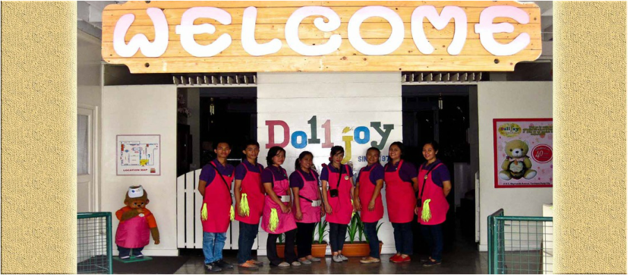

Currently, located in Caniogan, Pasig City, a bustling city 10 kilometers east of Manila. The museum, a display space of approximately 2,000 square meters of floor area, houses a collection of 2,100 pieces of assorted dolls, toys and other items of interest related to doll-making.
Aside from the dolls which were made for export by the Dolljoy factory, also on display are the personal doll collection of the owners and their children.
Year 1972 saw the beginnings of Dolljoy Factory as backyard cottage-industry in Mandaluyong City. Back in those days, the owners’ four daughters always received dolls as presents so they thought of making their own dolls.
In the 1980’s, the proponents met Samuel Butcher, the creator and owner of Precious Moments Company, whose dolls were known for its teardrop-shaped eyes. He commissioned Dolljoy to manufacture these dolls which were released only in the USA.
Early 2007, Dolljoy Factory and Museum was conceptualized and started opening its doors to educational tours with the intent of showcasing the innate talent of the Filipinos in designing and creating dolls. As far as having a simulated factory on how the dolls were made from very first step.
To instill in the hearts and minds of the young at heart the appreciation and love for work and the continued quest for excellence… that dedication devoted to toil and diligent labor bears fruits of invaluable human achievement.
To give value to the years of joy and sacrifices in excellent doll making as well as to showcase the ingenuity and creativity of Filipino craftsmen.